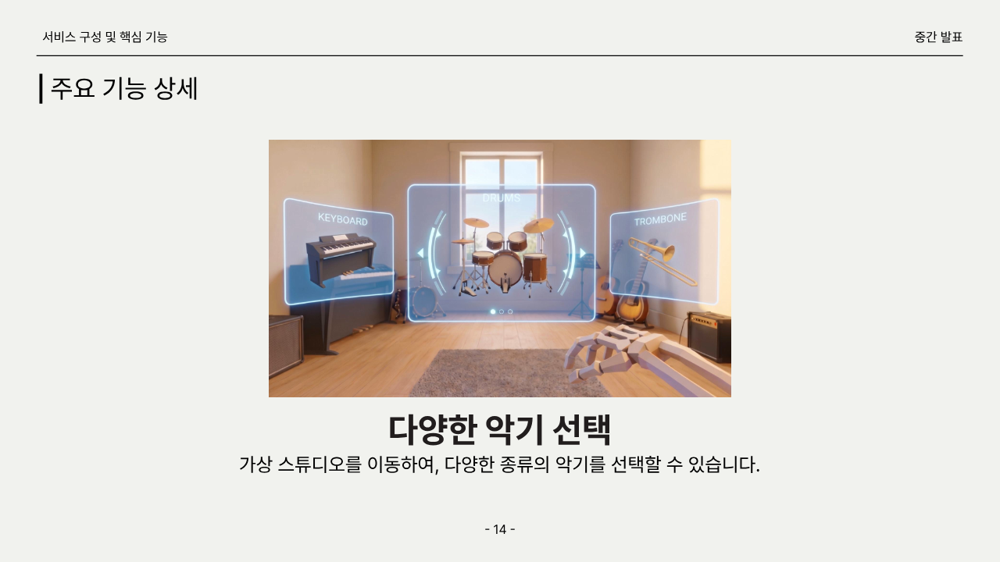
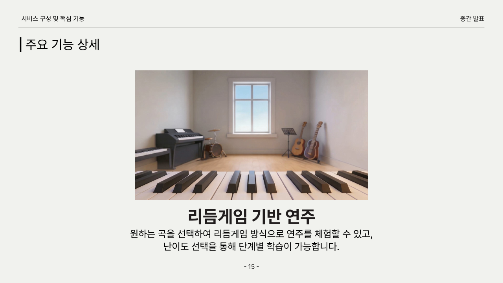
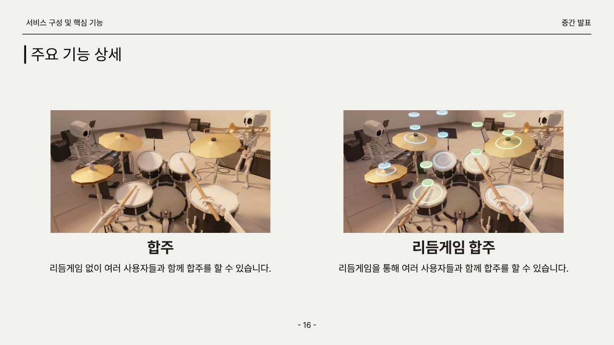
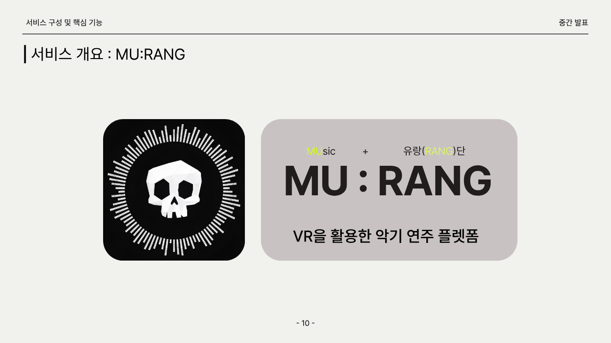

다양한 악기 선택
스튜디오를 이동하며 악기를 선택하고, 선택한 악기에 맞는 입력·사운드·시각 피드백을 제공합니다.
Why MU:RANG
MU:RANG은 MUsic과 유랑(RANG)을 결합한 이름입니다. 악기 연주를 배우고 싶지만 공간, 소음, 악기 구매 비용, 합주 인원 부족, 악보와 박자의 난이도 때문에 지속하지 못하는 사람들에게 "누구나 즉시 즐길 수 있는 VR 연주 경험"을 제공하는 것이 목표입니다.
가상 스튜디오에서 피아노, 드럼 등 여러 악기를 선택하고 소음 부담 없이 연주 경험을 시작합니다.
리듬게임 방식의 노트 가이드와 판정 피드백으로 악보를 바로 읽기 어려운 사용자도 곡을 따라갈 수 있습니다.
멀티플레이 기반 원격 합주를 통해 혼자 연습하던 사용자가 다른 연주자와 같은 공간감을 공유합니다.
Player Journey
MU:RANG은 연습을 숙제처럼 시작하게 만들지 않습니다. 사용자는 가상 스튜디오에 들어와 악기를 고르고, 자기 수준에 맞는 곡을 선택한 뒤, 직접 연주하는 파트와 자동 반주가 어우러지는 한 곡의 경험을 완성합니다.
피아노, 드럼 등 가상 악기를 둘러보고 지금 연주하고 싶은 악기를 바로 선택합니다.
곡과 난이도를 고른 뒤 노트 가이드를 따라 연주하고, 박자와 입력 정확도를 즉시 피드백받습니다.
혼자 연주할 때도 자동 반주가 곡을 채워주고, 함께 접속한 사용자와는 같은 공간에서 합주합니다.
Service Structure
사용자는 가상 스튜디오에서 악기를 선택하고, 곡과 난이도를 고른 뒤 리듬게임 방식으로 연주합니다. 플레이어가 선택하지 않은 트랙은 자동 반주로 발화되어 한 명이 연주해도 곡 전체가 완성됩니다.

스튜디오를 이동하며 악기를 선택하고, 선택한 악기에 맞는 입력·사운드·시각 피드백을 제공합니다.

곡과 난이도 선택 후 노트 가이드를 따라 연주하며 Perfect, Good, Miss 판정으로 박자 정확도를 확인합니다.

리듬게임 없이 자유롭게 합주하거나, 리듬게임 세션에서 여러 사용자가 각자의 파트를 맡아 협주할 수 있습니다.

연주를 배우고 싶지만 떠돌던 사용자가 한 공간에 머물며 음악을 계속하게 만드는 경험을 지향합니다.
Brand Vision
MU:RANG은 악기 입문자, 음악 게임 사용자, VR 콘텐츠 사용자 모두에게 연주를 더 가볍게 시작하고 오래 머물 수 있는 경험을 제안합니다. 배워야 하는 콘텐츠가 아니라, 들어가면 바로 음악이 시작되는 공간을 지향합니다.
악기와 연습실을 갖추기 전에도 VR 기기만으로 음악을 시작할 수 있습니다.
목표, 난이도, 판정 피드백이 연습을 짧은 성취의 반복으로 바꿉니다.
멀티플레이 합주와 공연형 경험을 통해 혼자 치던 음악을 함께 나누는 순간으로 확장합니다.
새로운 곡, 악기, 가상 공간을 추가하며 하나의 연주 플랫폼으로 성장합니다.
Demo Video
플레이 영상은 공개 준비가 끝나는 대로 이 영역에 연결됩니다. 가상 악기 선택, 리듬게임 연주, 원격 합주 장면을 한 번에 확인할 수 있는 영상으로 업데이트할 예정입니다.
Team
캡스톤 팀은 기획, 개발, 사운드, 핸드 트래킹, 멀티플레이를 중심으로 MU:RANG을 만들고 있습니다.
팀장·PM, 프로젝트 기획, 사운드 로직, 리듬게임 로직·악보 제작, 서류 작성
프로젝트 기획, 핸드 트래킹, 컴퓨터 그래픽스, 악기 물리 상호작용, GitHub 총괄 관리
프로젝트 기획, 멀티플레이 구현, DB 연결, 서류 작성
Release Plan
MU:RANG은 완성 이후 Meta App Store 또는 Steam 출시를 목표로 합니다. 정식 체험 링크와 다운로드 안내는 출시 준비가 끝난 뒤 이 페이지에 연결할 예정입니다.